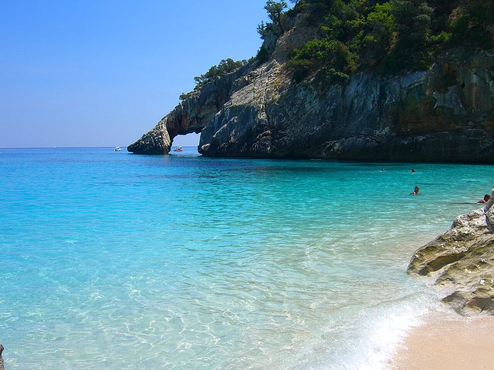

Cala Goloritzé
Sardaigne, Italie · baignade, snorkeling, kayak

Crique de galets blancs dominée par une aiguille calcaire de 143 mètres, dans le golfe d’Orosei. L’accès se mérite par un sentier de randonnée ou par la mer.
- Lieu
- Sardaigne, Italie
- Niveau
- Intermédiaire
- Activités
- baignade, snorkeling, kayak
- Type d'eau
- Mer / océan
- Coordonnées
- 40.11, 9.69 (position approximative du secteur)
Dangers à connaître
- Descente d’environ une heure.
- Bateaux interdits près du rivage : respecte les bouées.
Le conseil d'Ocean Buddy
L’accès est réglementé et payant en saison : réserve et prévois de bonnes chaussures.
Ouvrir dans Ocean Buddy Télécharger sur l'App Store
Source : Fiche Ocean Buddy · septembre 2026 · à vérifier localement.